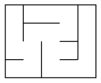
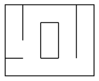
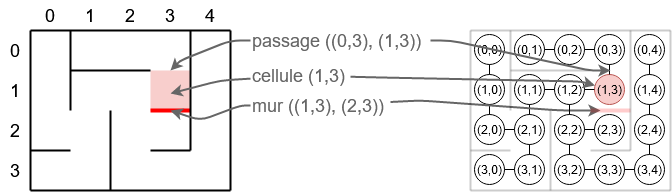
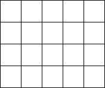
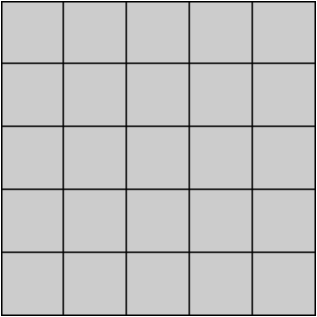
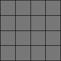
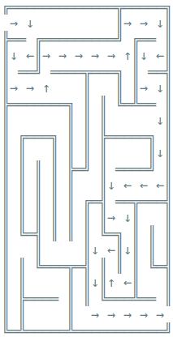
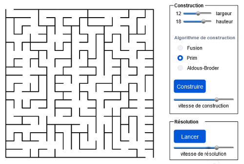

Mini-projet
Généralités
Un labyrinthe est une surface connexe. De telles surfaces peuvent avoir des topologies différentes : simple, ou comportant des anneaux ou des îlots. On peut distinguer deux catégories de labyrinthe :
- Les labyrinthes « parfaits » : chaque cellule est reliée à toutes les autres et, ce, de manière unique.

- Les labyrinthes « imparfaits » (tous les labyrinthes qui ne sont pas parfaits) : ils peuvent donc contenir des boucles, des îlots ou des cellules inaccessibles.

Pour la suite, nous choisissons de représenter un labyrinthe par un graphe, dont les sommets représentent des cellules (tuples de coordonnées (ligne, colonne)) et les arêtes des passages entre deux cellules (l’absence d’arête équivaut alors à un mur).

Nous définissons plusieurs classes :
- La classe
Graphe, possédant bon nombre des méthodes précédemment implémentées, et les classesPileetFilequi sont utilisées pour implémenter certaines méthodes.
Classe Graphe
class Graphe:
""" Implémentation d'un graphe à partir d'un dictionnaire d'adjacence
"""
def __init__(self):
self.A = {}
def __repr__(self):
return str(self.A)
def est_vide(self):
return not self.graphe
def __len__(self):
return len(self.A)
def ajouter_sommet(self, x):
""" Ajoute un sommet x
"""
if not x in self.A:
self.A[x] = set()
def ajouter_arete(self, x, y):
""" Ajoute une arête entre les sommets x et y
"""
self.ajouter_sommet(x)
self.ajouter_sommet(y)
self.A[x].add(y)
self.A[y].add(x)
def voisins(self, x):
""" Renvoie l'ensemble des voisins du sommet x
"""
return self.A[x]
def aretes(self):
""" Renvoie la liste de toutes les arêtes du graphe
"""
L = []
for x, V in self.A.items():
for v in V:
L.append((x, v))
return L
def arete(self, x, y):
""" Renvoie True s'il existe une arête
entre le sommet x et le sommet y
"""
return x in self.A[y]
############################################################################
# Profondeur
############################################################################
def parcours_prof(self, s, vus = set()):
""" Parcours en profondeur à partir du sommet s
--> renvoie vus : ensemble des sommets visités
(fonction récursive)
"""
if not s in vus:
vus.add(s)
for v in self.voisins(s):
self.parcours_prof(v, vus)
return vus
def parcours_ch(self, s, pere=None, vus={}):
""" Parcours en profondeur à partir du sommet s
--> renvoie vus : dictionnaire des couples (visité : précédent)
"""
if not s in vus:
vus[s] = pere
for v in self.voisins(s):
self.parcours_ch(v, s, vus)
return vus
def chemins(self, x, y):
""" Parcours en profondeur à partir du sommet s
Renvoie la liste des chemins parcourus
"""
vus = self.parcours_ch(x)
c = []
if y in vus:
s = y
while s is not None:
c.append(s)
s = vus[s]
return c[::-1]
def existe_chemin(self, x, y):
""" Renvoie True si un chemin existe entre les sommets x et y
"""
return y in self.parcours_prof(x)
############################################################################
# Largeur
############################################################################
def parcours_larg(self, s):
""" Parcours en largeur du graphe, à partir du sommet s
"""
f = File()
sommets_visites = {}
f.enfiler(s)
while not f.est_vide():
tmp = f.defiler()
if tmp not in sommets_visites:
sommets_visites[tmp] = True
liste_voisins = [y for y in self.voisins(tmp) if y not in sommets_visites]
for voisins in liste_voisins:
f.enfiler(voisins)
return sommets_visites
def parcours_larg_chemin(self, s):
""" Parcours en largeur du graphe, à partir du sommet s
Renvoie un dictionnaire {sommet: précédent}
qui doit permettre de construire des chemins depuis A
"""
sommets_visites = {s: None}
f = File()
f.enfiler(s)
while not f.est_vide():
s = f.defiler()
liste_voisins = [y for y in self.voisins(s) if y not in sommets_visites]
for voisin in liste_voisins:
f.enfiler(voisin)
sommets_visites[voisin] = s
return sommets_visites
def chemins_larg(self, x, y):
""" Parcours en largeur à partir du sommet x jusqu'au sommet y
Renvoie la liste des chemins parcourus
"""
sommets_visites = self.parcours_larg_chemin(x)
if y not in sommets_visites:
return None
s = y
ch = [s]
while s != x:
s = sommets_visites[s]
ch.append(s)
ch.reverse()
return ch
Classe Pile
class Maillon :
def __init__(self, valeur, suivant):
self.valeur = valeur
self.suivant = suivant
class Pile:
"""Implémentation des piles à l'aide des listes chaînées"""
def __init__(self):
self.longueur = 0
self.sommet = None
def empiler(self, valeur):
self.sommet = Maillon(valeur, self.sommet)
self.longueur += 1
def depiler(self):
if self.longueur > 0 :
valeur = self.sommet.valeur
self.sommet = self.sommet.suivant
self.longueur -= 1
return valeur
def est_vide(self):
return self.longueur == 0
def lire_sommet(self):
return self.sommet.valeur
def taille(self):
return self.longueur
def __str__(self):
ch = "\nEtat de la pile :\n"
sommet = self.sommet
while sommet != None :
ch += '|' + str(sommet.valeur) + '|\n'
sommet = sommet.suivant
return ch
Classe File
class Maillon:
def __init__(self, valeur, precedent=None, suivant=None):
self.valeur = valeur
self.precedent = precedent
self.suivant = suivant
class File:
"""Implémentation des files à l'aide des listes doublement chaînées"""
def __init__(self):
self.longueur = 0
self.debut = None
self.fin = None
def enfiler(self, valeur):
if self.longueur == 0 :
self.debut = self.fin = Maillon(valeur)
else:
self.fin = Maillon(valeur, self.fin)
self.fin.precedent.suivant = self.fin
self.longueur += 1
def defiler(self):
if self.longueur > 0:
valeur = self.debut.valeur
if self.longueur > 1:
self.debut = self.debut.suivant
self.debut.precedent = None
else:
self.debut = self.fin = None
self.longueur -= 1
return valeur
def lire_tete(self):
return self.debut.valeur
def est_vide(self):
return self.longueur == 0
def taille(self):
return self.longueur
def __str__(self):
ch = "\nEtat de la file :\n"
maillon = self.debut
while maillon != None:
ch += str(maillon.valeur) + '|'
maillon = maillon.suivant
ch += "\n"
return ch
- La classe
Labyrinthe, dans laquelle est notamment instancier un objet de type graphe, et qui est munie d’une méthode de représentation en mode semi-graphique (avec des caractères spéciaux).
Classe Labyrinthe
class Labyrinthe:
contours = [" ", "═", "║", "╚", "═", "═", "╝", "╩", "║", "╔", "║", "╠", "╗", "╦", "╣", "╬"]
# contours = [" ", "╶", "╵", "└", "╴", "─", "┘", "┴", "╷", "┌", "│", "├", "┐", "┬", "┤", "┼"]
# contours = [" ", "█", "█", "█", "█", "█", "█", "█", "█", "█", "█", "█", "█", "█", "█", "█"]
def __init__(self, w = 0, h = 0):
self.G = Graphe()
self.w = w
self.h = h
self.reset()
# Tableau de la représentation du labyrinthe en mode semi-graphique
self.repr = [["_"]*(2 * self.w + 1) for c in range(2 * self.h + 1)]
self.effacer_repr()
# Coordonnées des ouvertures vers l’extérieur
#
self.ouvertures = []
def reset(self):
for l in range(self.h):
for c in range(self.w):
self.G.ajouter_sommet((l, c))
def __repr__(self):
self.construire_repr()
L = []
for l in self.repr:
L.append("".join(l))
return "\n".join(L)
def construire_repr(self):
""" Construit la représentation du labyrinthe en mode semi-graphique dans le tableau à deux dimensions self.repr
self.ouvertures : liste des ouvertures vers l'extérieur (cellules : tuple (l,c))
"""
# Les murs
for c in range(self.w):
self.repr[0][2*c+1] = Labyrinthe.contours[5]
for l in range(self.h):
self.repr[2*l+1][0] = Labyrinthe.contours[10]
for c in range(self.w):
if l+1 < self.h and self.G.arete((l, c), (l+1, c)):
self.repr[2*l+2][2*c+1] = Labyrinthe.contours[0]
else:
self.repr[2*l+2][2*c+1] = Labyrinthe.contours[5]
if c+1 < self.w and self.G.arete((l, c), (l, c+1)):
self.repr[2*l+1][2*c+2] = Labyrinthe.contours[0]
else:
self.repr[2*l+1][2*c+2] = Labyrinthe.contours[10]
# Les coins
for l in range(0, len(self.repr), 2):
for c in range(0, len(self.repr[0]), 2):
code = 1 * (c+1 < len(self.repr[0]) and self.repr[l][c+1] != " ")
code += 2 * (l != 0 and self.repr[l-1][c] != " ")
code += 4 * (c != 0 and self.repr[l][c-1] != " ")
code += 8 * (l+1 < len(self.repr) and self.repr[l+1][c] != " ")
self.repr[l][c] = Labyrinthe.contours[code]
# Les ouvertures vers l’extérieur
for o in self.ouvertures:
l, c = o
if c == 0:
self.repr[2*l+1][2*c] = " "
elif c == self.w-1:
self.repr[2*l+1][2*c+2] = " "
elif l == 0:
self.repr[2*l][2*c+1] = " "
elif l == self.h-1:
self.repr[2*l+2][2*c+1] = " "
def effacer_repr(self):
for l in range(self.h):
for c in range(self.w):
self.repr[2*l+1][2*c+1] = " "
Exercice 1 : quelques méthodes pour Labyrinthe ...
- Ajouter deux méthodes
voisins_cellule(s)etmurs_cellule(s)de la classeLabyrinthequi renvoient respectivement la liste des cellules voisines de la cellules, accessibles ou pas et la liste des murs adjacents à la cellules, ouvert (passage) ou pas. - Ajouter une méthode
ouvrir_passage(x, y)permettant d’ouvrir un passage entre les cellulesxety. Cette méthode doit utiliser la méthodeajouter_arete(x, y)de la classeGrapheet doit vérifier quexetysont bien deux cellules adjacentes.
Construction d’un labyrinthe
Il existe de très nombreux algorithmes de construction de labyrinthe…
Fusion aléatoire de chemins
- On part d’un labyrinthe dont tous les murs sont fermés.
- On associe une valeur unique (un identifiant) à chaque cellule.
- À chaque itération, on choisit un mur à ouvrir de manière aléatoire.
- Lorsqu’un mur est ouvert entre deux cellules adjacentes, les deux cellules sont liées entre elles et forment un « chemin ».
- À chaque fois que l’on tente d’ouvrir un passage entre deux cellules, on vérifie que ces deux cellules ont des identifiants différents.
- Si les identifiants sont identiques, c’est que les deux cellules sont déjà reliées et appartiennent donc au même chemin. On ne peut donc pas ouvrir le passage.
- Si les identifiants sont différents, le passage est ouvert, et l’identifiant de la première cellule est affecté à toutes les cellules du second chemin.

Exercice 2 : Construction d'un labyrinthe par fusion de chemins
Implémenter cet algorithme dans une méthode construire_fusion().
Algorithme de Prim
On part d’un labyrinthe dont tous les murs sont fermés.
On crée :
- Une liste de cellules « non visitées » (pleine au départ).
- Une liste de murs (initialement les murs adjacents d’une cellule choisie aléatoirement).
Tant qu’il y a des murs dans la liste :
- On choisit un mur au hasard dans la liste.
- Si une seule des deux cellules que le mur divise est visitée, alors :
- On ouvre un passage à travers ce mur.
- On marque la cellule « non visitée » comme « visitée » (on la supprime de la liste).
- On ajoute les murs voisins de la cellule à la liste des murs.
- On retire le mur de la liste.
Exercice 3 : Construction d'un labyrinthe par l'algorithme de Prim
Implémenter cet algorithme dans une méthode construire_prim().
Algorithme d’Aldous-Broder
On part d’un labyrinthe dont tous les murs sont fermés.
- On choisit une cellule au hasard comme « cellule courante » et on la marque comme « visitée ».
- Tant qu’il existe des cellules non visitées :
- On choisit un voisin au hasard.
- Si le voisin choisi n’a pas encore été visité :
- On ouvre un passage entre la « cellule courante » et le voisin choisi.
- On marque le voisin choisi comme étant visité.
- On fait du voisin choisi la « cellule courante ».

Exercice 4 : Construction d'un labyrinthe par l'algorithme d’Aldous-Broder
Implémenter cet algorithme dans une méthode construire_aldous_broder().
Algorithme de Wilson
On part d’un labyrinthe dont tous les murs sont fermés.
- On choisit une cellule au hasard dans le labyrinthe et on la marque comme « visitée ».
- Tant qu’il existe des cellules « non visitées » :
- On choisit au hasard une cellule non encore « visitée » qu'on définit comme « cellule courante ».
- Tant qu'on ne tombe pas sur une cellule « visitée » :
- On choisit un de ses voisins au hasard.
- On mémorise le chemin dans un dictionnaire.
- On fait du voisin choisi la « cellule courante ».
- On ouvre alors le passage de la cellule de départ jusqu'à la dernière cellule qui a permis au programme de sortir de la précédente boucle.

Exercice 5 : Construction d'un labyrinthe par l'algorithme de Wilson
Implémenter cet algorithme dans une méthode construire_wilson().
Algorithme de backtracking
Il s'agit d'une version aléatoire de l'algorithme de recherche en profondeur d'abord.
Nous commençons à partir de n'importe quelle cellule et explorons le plus loin possible un chemin avant d'être bloqué et de revenir en arrière afin de trouver un autre chemin (d'où la notion de backtracking).
On part d’un labyrinthe dont tous les murs sont fermés.
- On choisit une cellule au hasard dans le labyrinthe, on la marque comme « visitée » et on l'empile dans une pile.
- Tant que la pile n'est pas vide :
- On dépile la cellule en sommet de pile qu'on définit comme « cellule courante ».
- Si la « cellule courante » a des voisins qui n'ont pas été visités :
- On empile la « cellule courante ».
- On choisit un de ses voisins au hasard.
- On ouvre un passage entre la « cellule courante » et le voisin choisi.
- On marque le voisin choisi comme « visité » et on l'empile.
Exercice 6 : Construction d'un labyrinthe par l'algorithme de backtracking
Implémenter cet algorithme dans une méthode construire_backtracking().
Résolution d’un labyrinthe
Une fois le labyrinthe créé à l'aide d'un des algorithmes de construction précédents, il va falloir le résoudre.
Pour cela, il faut commencer par créer deux ouvertures : une de départ et l'autre d'arrivée. Ces ouvertures peuvent être créées de manière aléatoire à chaque génération du labyrinthe.
On peut envisager une résolution automatique du labyrinthe mais on peut aussi le soumettre à un joueur et vérifier qu'il l'a bien résolu !
Résolution automatique
Puisque nos labyrinthes sont « parfaits », il n'existe qu'un seul chemin menant d'une cellule du labyrinthe (donc de l'ouverture par exemple...) à une autre.
Exercice 7 : Résolution automatique d'un labyrinthe
Implémenter un algorithme de sortie automatique de labyrinthe dans une méthode sortir_laby().
Afin de vérifier que la résolution est bien faite, on marquera le passage sur chaque cellule de la manière suivante :

Pour aller plus loin
A présent, on peut imaginer la possibilité de soumettre nos labyrinthes à un joueur. Celui-ci pourrait choisir par exemple :
- Les dimensions du labyrinthe.
- L'algorithme de construction du labyrinthe.
- La vitesse de construction du labyrinthe.
Selon votre modèle, le joueur peut se déplacer dans le labyrinthe en utilisant des touches du claviers ou en se servant de la souris.
On peut aussi imaginer la résolution en un temps chronométré...
Voici un exemple d'une interface graphique possible :

Concernant les bibliothèques d'interfaces graphiques disponibles avec Python, on peut citer :